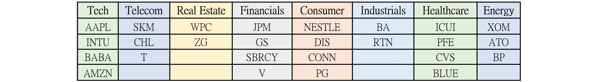
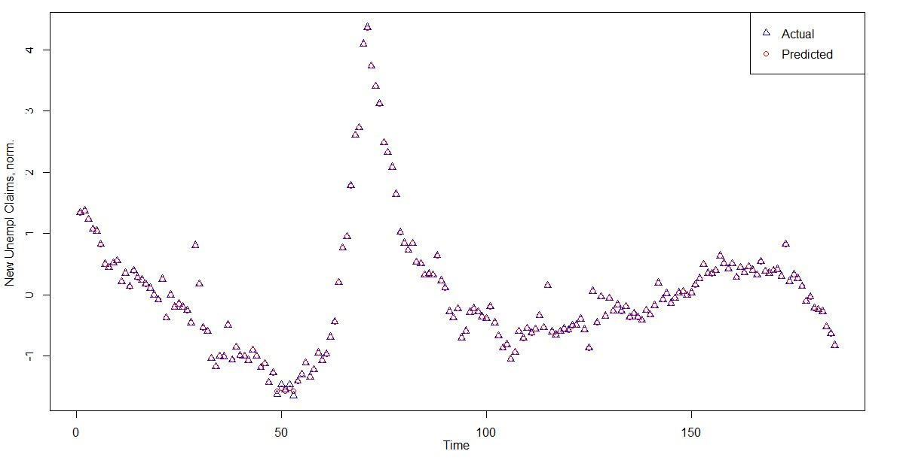

Also See:
Portfolio Construction Project
(Posted May 31, 2020)
My group and I completed this project as part of the final for the Master's Financial Economics course taught through NYU's Department of Economics. I was in my third semester at NYU. Our prompt was to take the topics and ideas discussed in the class and compile them into an investing strategy that we might present to a (fictional) client, assuming a $500 million initional investment.
Original: Portfolio Construction Project
Summary:
We begin by noting that the economy is on a record high; however, the decision by some central banks to begin taking steps toward recessionary policy has dampened our outlook for the next two years. This asymmetry in monetary policy as well as the trade disputes that were ongoing at the time, we warned, could provide the seeds for the next recession. With this likelihood in mind, we start by setting aside 20% of our principle to be invested in bonds and CDs. We establish this reserve in near-moneys with the plan to liquidate at the depth of the next recession and capitalize on the depressed prices. Before choosing allocations for the remaining 80%, we divided the market into cyclical and defensive industries, and from those categories we selected a total of eight industries to focus on. For our defensive industries, we designated Telecom, Consumer Goods, Healthcare, Energy and Industrials. For our cyclical industries, we designated Technology, Finance and Real Estate.
From those industries, we chose two to four industry-leaders. Our reasoning was that established, high-cap companies would provide less volatility and thus less risk to the portfolio. To determine the most efficient allocation of funds between the cyclical and defensive categories, we employed the use of a deep neural network to forecast trends in the economy. Specifically, we trained the network with the leading, coincident and lagging indicators as designated by the Conference Board and collected from FRED. While such networks will never anticipate every shock, our neural network provided an early detection system for trends in areas such as housing starts and new jobless claims, and translated that data into a forecast of possible downstream effects.
For the day-to-day management of our stock portfolio, we developed a set of buy-and-sell heuristics based around moving averages (MA). For cyclical companies, we set a more aggressive set of triggers to buy when the 10-day MA passed above the 20-day MA, and to sell when the 10-day MA dropped below the 20-day MA. For defensive companies, we set a more conservative set of triggers to buy when the 5-day MA passed above the 100-day MA, and to sell when the 5-day MA dropped below the 100-day MA. The cyclical strategy was chosen to minimize the possibility of an unexpected shock eroding earnings. For the defensive, we chose triggers meant to mimic a longer term, buy-and-hold strategy, while still avoiding taking all the losses from a negative trend.
When our strategy was back tested with the historic data, we were able to capture a 275% return, compared to the S&P500’s 217.77% return over the same time period.
Remarks:
I have always found Finance and Financial Economics fascinating from a data science perspective—like in sports, everything is recorded so that there is always data. This opportunity to work with a team of other students to explore any investing strategy we thought interesting was a great experience. In addition, this was my first opportunity to work with neural networks, and the Conference Board set of indicators. Since then, the Conference Board indicators have become my favorite tools for exploring Macroeconomic trends.
That said, I had originally planned to incorporate the neural network more fully into the strategy. I wanted to train an AI, that could take the raw indicator data, translate it into an outlook score, use that score to weight the allocations across the industries, and then even use that score to determine the optimal moving-average pairs for taking long and short positions. Unfortunately, the AI was plagued with bugs and we did not have enough time to resolve them before the project deadline. To save the machine learning aspect of the project, we decided to just focus on training the neural network. While it still performed remarkably well in cross-validation, I do not think the network parameters we arrived on were optimal—I found a bug in the neural network package we were using only after we submitted the project.
Now that I have more experience with neural networks, I would like to return to trying to build an AI like the one described above at some point in the future—when I have more time to dedicate model fitting and bug fixing.